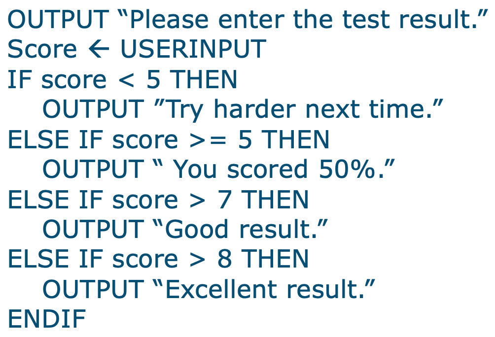
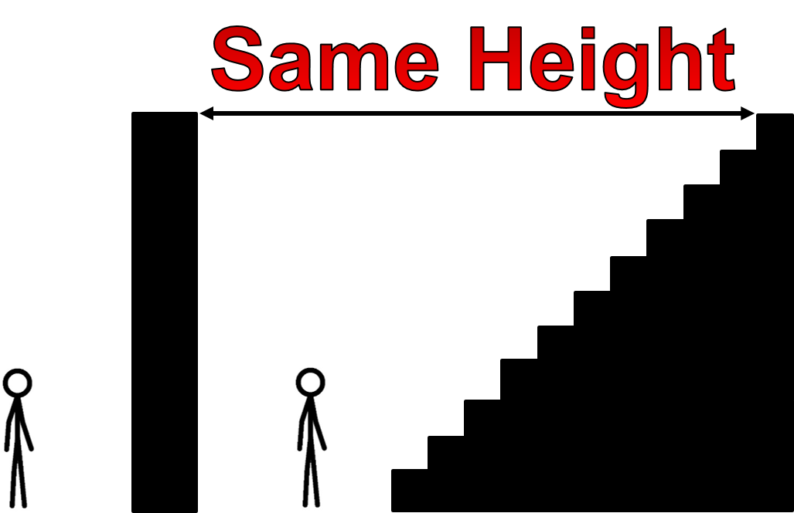

3.1.1 Representing Algorithms
Table of Contents
1 Representing Algorithms
Learn It: What are Algorithms?
What is an Algorithm?
An Algorithm is a sequence of instructions or steps that can be followed by humans and computers to complete a specific task.
- An
Algorithmis a series of steps that can be followed to complete a specific tasks. - It is not the same thing as a computer program which is an implementation of an algorithm!
- We use algorithms as part of the
planning stage, so that before we can write the program, we have to work out the steps needed to solve a given problem. - A working algorithm will always finish and return an answer or perform a series of tasks that it was supposed to.
- We can use algorithms to carry out everyday tasks, often without really thinking about them.
- Here are some examples of algorithms that you may be familiar with:
- Baking a Cake,
- Recipes,
- Directions,
- Knitting Patterns,
- Instruction manual for building something.
Here's a Problem
- How can we create an algorithm to show the steps in getting ready
for school:
- Get out of bed.
- Take a shower and clean teeth.
- Get dressed.
- Turn on the kettle.
- Put bread in the toaster and turn it on.
- Wait for the kettle to boil and make tea.
- Wait for bread to toast, butter it and add Jam.
- Drink tea and eat toast.
- Gather school books and put in bag.
- Put on shoes and coat.
- Leave the house.
The Algorithm above shows the sequence of tasks. Different people will design different algorithms, as they will do things in a different order, meaning there can be many solutions to the same problem. Some of these tasks could be further devided into sub-tasks as they might be made up of smaller steps. For example "Cleaning your Teeth' could involve many different steps including applying toothpaste to the brush, checking if all teeth are clean and rinsing out your mouth etc...
Steps to creating an Algorithm
- An algorithm does not have to be written in code.
- The first steps to working out the design will be to
draw diagramsorlist the stepsinvolved. - Break down the problem and then structure a solution using standard
tools called
flowchartsandpseudocode. - Only when the solution has some structure can you effectively start coding it.
Pseudocodeis the first step to actually coding your solution, as it outlines the programming contructs, but doesn't rely on any specific language syntax.
2 Flowcharts and Pseudocode
Learn It: Flowcharts and Pseudocode
- In computing we either write programs or create computer systems to
solve a problem. Theproblemis the requirement or needs that have to be met. - The solution could be a simple program or a complex hardware/software real-world scenario, which needs to be broken down into many problems or sub-problems.
- Understanding how to solve the problem is important and we cannot just start coding at line 1 and hope to get a working solution quickly!
- So the first step is to write an
algorithm, as we learned before this is a series of steps needed to solve the problem. - The following section will demonstrate how we can develop algorithms
using tools like,
flowchartsandpseudocode.
Flowcharts
- Flowcharts can be used to represent algorithms visually, they use
diagramswhich use particular symbols to show theflow of data,processingandinput/outputthat takes place within a program or task. - The image below shows that standard flowchart symbols that we use:

Pseudocode
- Pseudocode is a form of
Structured Englishfor writing an algorithm. - It uses programming-style constructs, but is not written in an actual programming language.
- You do not need to worry about the detailed syntax or be precise about how the code will complete a particular task.
- Writing in pseudocode helps you concentrate on the
logic (Process)andefficiencyof your algorithm before you have to start thinking about the actual code you will be using. - AQA Pseudocode Guide
Example AQA Pseudocode 
Basic Programming Constructs
- There are
threebasic constructs that are used to write algorithms
in pseudocode:
- Sequence - This is writing the steps down in the order that they need to happen.
- Selection - This is the
IF…THEN…ELSEconstructs that allow you to choose between options. - Iteration - Finally there is iteration (loop) constructs that you will learn when you program - There are three;
FOR…UNTIL…WHILE.
3 Decomposition
Learn It: Decomposition
Let's break it down!
Decomposition is the process of breaking a problem down into smaller, simpler steps or stages so that problems can be solved much easier.
- It is one of the
four cornerstonesof Computational Thinking.
Advantages of using Decomposition
- Breaking a problem down into smaller
sub-problemshas a number of advantages:Smaller problemsare easier to solve thanlarger problems.- Each
sub-problemcan be developed separately, making planning and working to a timescale easier. Sub-problemsare easier to distribute amongst a team than one large problem.
Sub-Problem Example
- Think of decomposition as like being faced with a 15ft wall. It's unrealistic to think you could just jump/climb to the top.
- However, if we break that wall down into 15 1ft tall steps, we can tackle one step at a time to make it to the top.

Checkmate
- Let's think of another example… Chess!.
- If we were going to create a program for a chess game, it'd seem quite daunting at first.
- However, if we Decompose the problem, we see the individual problems within a chess game.

- Starting with just /"chess game"/ we can Decompose it into 5 problems which are easier to solve.
- But this can be Decomposed even further…

- This is now much easier to understand and can be used to create a flowchart or pseudocode.
Badge It: Rock…Paper…Scisssors!
Silver: Decompose the steps involved in the game of Rock, Paper and Scissors:
- Decompose the game of Rock Paper Scissors
- You can do this as a numbered list or bullet pointed list
- Upload to Algorithms - Decomposition: Silver on BourneToLearn
Badge It: Rock…Paper…Scisssors!
Gold: Create a flowchart for the game:
- Use your silver decomposition to create a flowchart
- Make sure you use the correct symbols!
- Upload to Algorithms - Decomposition: Gold on BourneToLearn
Badge It: Rock…Paper…Scisssors!
Platinum: Using your algorithm, code a solution for the game:
- Using your numbered list or bullet pointed list and flowchart, write the solution in Python
- Upload to Algorithms - Decomposition: Platinum on BourneToLearn
4 Abstraction
Learn It: Abstraction
Abstraction is the process of removing all unneccesary details from a problem, until all that remains is what is needed to solve the problem.
- It is also one of the
four cornerstonesof Computational Thinking. - We use this to make the problem simplier but also consequently less realistic.
- Watch the video below and see if you can spot how Abstraction is used:
Badge It: Definition & Classroom Example
Silver: Complete the following abstraction task:
- Perform Abstraction on this classroom.
- Think about what details can be Abstracted.
- Do we need the walls? chairs? keyboards? Think about the seating plan as an example.
- Produce an Abstracted image of the classroom (Paint/Word/PowerPoint).
- Upload to Algorithms - Abstraction: Silver on BourneToLearn
Badge It: Abstraction Definition Guide
Gold: Complete the following:
- Write a definition of abstraction.
- Create a guide with a series of top tips for anyone looking to abstract a problem.
- Upload to Algorithms - Abstraction: Gold on BourneToLearn
Badge It: Abstraction Definition Guide
Platinum: Write an algorithm is Pseudocode for the following problem:
- Weight Conversion Program that takes a user input as either KG or Stones and then stores this value in a suitable variable.
- Give the user a choice of converting either KG to Stones or Stones to KG.
- Finally output the correct conversion value to the user.
5 Pattern Recognition
Learn It: Pattern Recognition
Pattern Recognition is something we all do everyday. Most problems share patterns that have similarities or characteristics. It involves finding the similarities or patterns among small, decomposed problems that can help us solve more complex problems more efficiently.
- It is also one of the four cornerstones of Computational Thinking
- Without being told, we can find patterns in data.
- For example, a set of numbers 2, 4, 8, 16, 32, 64.
- Can you guess what the next number will be?
- …
- …
- …
- Ping!
- That's right! 128!
- We can assume that the next number will be 128 because we recognise the pattern of squaring 2.
- This pattern also relates to Binary
Try It: Illusion Example
Old or Young Woman?
- Can you see a Pattern in this image?
- Some people see a young woman, some see an old woman
- This is to do with how our brain automatically recognises patterns in pictures we look at